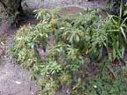
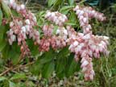
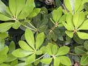
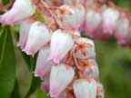
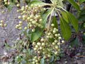

Lily of the valley bush
Pieris japonica
Other names
Japanese pearl flower, andromeda
Description
Dense woody shrub up to 3m tall. Pointed ovoid leaves up to 7cm long growing in coronet form around the stem. Leaves various shades of green and may be variegated. Flowers white to pink, drooping in grape like bunches.
Similar plants
Do not confuse with true lily of the valley.
Distribution
Throughout NZ. Ornamental plant found in gardens.
Toxin
Non cumulative toxins including andromedotoxin (grayanotoxins), diterpenoid and related compounds. (Same toxin as rhododendron) These irritate the skin and mucous membranes. Andromedotoxins have a marked effect on the heart causing prolonged depolarisation and excitation. They bind to and modify sodium channels and favour calcium movement into the cells resulting in a positive inotropic effect. Poisonings occur throughout the year.
Species affected
Livestock, especially ruminants (usually due to eating prunings thrown over the fence). In an incident in Southland, 50 of 700 ewes died.
Clinical signs acute
Clinical signs include salivation (burning sensation in the mouth), vomiting, abdominal pain, diarrhoea, depression, dyspnoea, weakness, staggering, convulsions, prostration and death in 1 - 2 days. Bradycardia, hypotension and atrioventricular block are cardiotoxic effects.
Clinical signs chronic
Post mortem signs
Congestion of lungs, green froth around mouth and in trachea.
Diagnosis
From history, clinical signs, post mortem findings (usually leaves in gut).
Differential diagnosis
Metaldehyde poisoning, rhododendron poisoning, acute heart failure, thiamine deficiency and mechanical obstruction of upper airways.
Treatment
Decontamination by gastric lavage, saline cathartic, activated charcoal and laxative. May use an emetic if there is no sign of convulsions. Supportive therapy including fluid replacement, respiratory support, atropine for severe bradycardia and isoprenaline may be indicated for heart block.
Prognosis
Poor.
Prevention
Control access to plant or plant trimmings.
References
Conner H.E. The Poisonous Plants In New Zealand. 1992. GP Publications Ltd, Wellington
Surveillance 2005, 32(3) 13
|  plant |
 |
|
|
 |
 |
|
|
 |
||
|
|
|
|